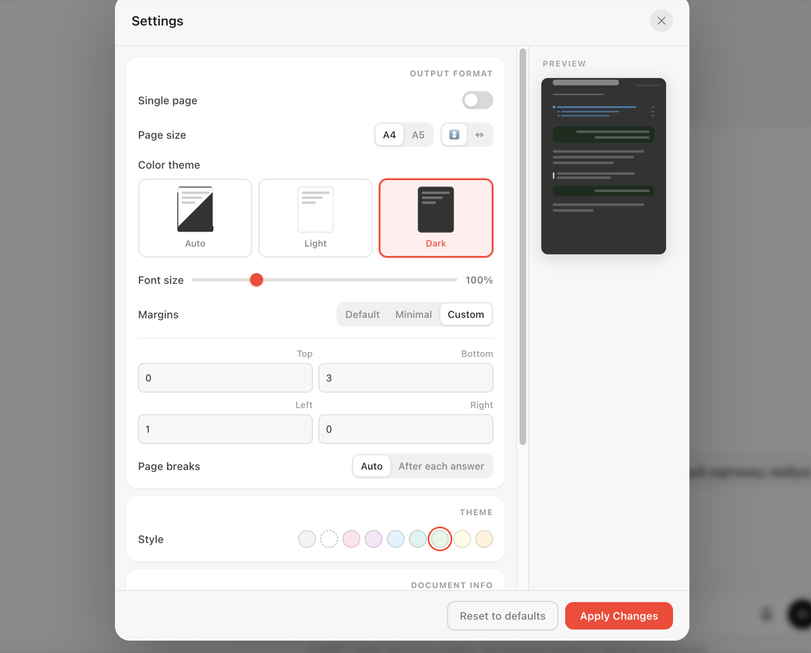

ExportGPT
in useA Chrome extension. It saves a ChatGPT conversation as a PDF: the whole thread, only the answers, or blocks you pick.

How it works

This came out of a bug. Exports of long chats started arriving cut short, always at the same point. A race or a timeout breaks somewhere different every time, so the cause had to be structural: ChatGPT had changed the way it holds a conversation, and the old way of reading it stopped working.

What people said
| what they wrote | what it turned out to be | what changed |
|---|---|---|
| “afraid of being banned” | a trust question, not a bug | nothing yet — the listing still does not say the extension only reads the page |
| “目前用不到” don't need it right now | the need is occasional: install, save a chat, remove | nothing — that is how a one-off tool is used |
| “neumí dlouhé konverzace s obrázky” can't handle long chats with images | a real ceiling: images are inlined into the file and inflate it | images are shrunk before sending — 24 MB → 2.7 MB on the measured chat |
| “It doesn't work” three times in one day | ChatGPT had stopped leaving placeholders for turns scrolled out of view | the harvest was rebuilt: it scrolls, collects, reassembles |
Decisions
Four that can be read without knowing the project.
A privacy statement starts with rendering, not with analytics
The conversation about what a product collects tends to start with counters, because that is what review forms ask about. Here it was the wrong end: three small analytics events sit beside a flow that sends the whole text of a conversation off the machine to be rendered. That flow is the product's main data movement, and it is now the first thing stated — before any mention of counters, which turned out to live in three separate layers that had been confused with each other.
A file name falls back to the first question, never to a generic title
Two different exports were both landing as “New chat”. The name had been read from the conversation's link in the sidebar, which a redesign moved, and the fallback — the browser tab title — lags behind renames. Files that differ in content but not in name are worse than badly named ones: they cannot be told apart later. Generic titles are now rejected outright, and the last resort is the first question the person asked, read from the rebuilt copy.
The failure counter records a reason, not just a failure
A bare count of failures says something broke and nothing else. Split by cause it becomes actionable: a timeout on an enormous conversation is answered with server resources, while a request that never arrived points at a network or a blocker on the user's side — a difference that decides what to do next. Console diagnostics were also deliberately left in the shipped build: they are what turned a report of “doesn't work” into a diagnosis in twenty minutes.
A change in behaviour that skips a version number never reaches anyone
A fix that excluded development builds from the statistics was written, committed, and believed to be working for two weeks. The version number was not raised, so the store kept serving the build without it, and test runs kept landing in the numbers. Code changes and product changes are not the same event: one lives in a repository, the other only exists once a version carries it out.